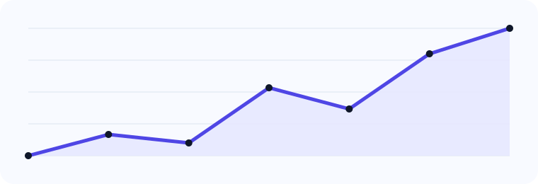

Gait-based identity support
Assist recognition where cooperation is low, face visibility is limited, or long-range observation is needed.
A product page dedicated to security-focused gait intelligence for critical facilities, campuses, enterprise zones and monitored environments.
The platform is positioned for contactless identity support, anomaly review, multi-camera event understanding and case-oriented decision support.
Identity support with human review.
This page frames the system as a security product with clear operator outcomes.
Assist recognition where cooperation is low, face visibility is limited, or long-range observation is needed.
Route ambiguous gait events into a review queue with confidence, covariate markers and operator notes.
Aggregate alerts, event trails and analyst comments into a workflow that fits surveillance operations.

The product page now includes a captured gait frame overlay rather than a general abstract graphic. It helps security teams understand how gait structure is converted into reviewable intelligence.
This is a product-style analytics dashboard, combining gait capture video, polished cards, metrics and a review queue to simulate how the product could be presented.

Camera 04 · confidence below watchlist policy threshold
Pattern repeated across three timestamps · manual review recommended
Oblique view and clothing variation detected during comparison
High confidence match · event auto-filed for audit trail
These use cases help the page read like a serious product website instead of a general research summary.
Support analyst review for high-sensitivity facilities with additional gait-based signals for movement interpretation.
Use gait as a long-range behavioural support signal in campus walkways, gateways and shared public spaces.
Investigate repeat visits, suspicious movement patterns and anomaly-like behaviour across time windows.
Present events in a dashboard that is understandable to operators, reviewers and compliance teams.